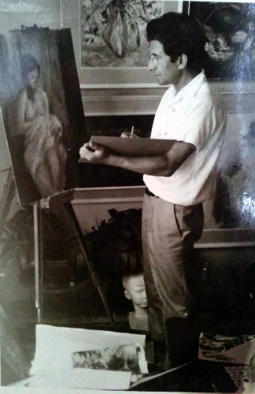

Biography
November 15, 1934 Mol — January 22, 2016 Novi Sad
Djordje Pusic was first–born child of Svetozar Pusic, lawyer and royal public notary, and Slavojka, born Cvetic. The Pusics were natives of Mol, where they came from the Patriarchate of Peć in the time of the “Great Serb migration” with Patriarch Arsenije Čarnojević in 1690. For centuries, they had a very important role in the political, social and cultural life of the town.
In 1952, Djordje Pusic, as a grammar school student, exhibited some fifty works painted in nature. In 1953 he enrolled the Academy of Fine Arts in Prague, in the class of Professor Vlaho Bukovac. After the second semester, he continued his education on his own. An avant–garde Czech painter Ian Zrzavi recommended him to study the art of Leonardo da Vinci. Afterwards he went to Vienna and in 1956 he made study travels to Munich, Berlin, and Dresden. He arrived in Paris with his later wife Vera Adamov, whom he had met in Prague in 1955, and stayed there until 1959 when he finally returned to Novi Sad. He had successful one–man exhibitions in Paris, and also took part in several Paris Salon exhibitions. This is where Pusic’s first mature artistic physiognomy, his Blue Phase (1953-1960), came into being. Upon his return to Novi Sad, he devoted himself to painting his hometown, its landscape, people and ambience with the passion of a visionary who marks his works with his authentically creative personality. In summertime he painted in Dalmatia (Mlini, Cavtat, and Dubrovnik) and the period from 1962-1969 is the artist’s Red Phase. From 1964 till 1968 he was working in Zenica, Bosnia as a profesor on Unversity for Internacional Art. Upon his return to Novi Sad, in the years 1970, 1971 and till 1976, Pusic made pastels and oil paintings in subdued colours. These works outlined the Grey Phase of his work (1977-1986). 1986 is the turning point in Pusic’s painting style: his attitude towards the subject becomes freer, the Coloristic Phase works are dominated by pure, intensive colours and the artist stopped himself on the verge of abstraction. The new artistic orientation culminated and was present in his Associative Phase works (1990—2005). In 1990, he started to paint first variations on themes of the Byzantine art and by the end of 1995 Pusic has produced about thirty works of his new Byzantine Phase. These works have completed the remarkable opus of about 6000 works, oil paintings, pastels, temperas, aquarelles, drawings, tapestries, stage designs, costume sketches, stained glass windows, mosaics, and graphics.
He took part in more than 300 one–man and 700 group exhibitions in the country and abroad. In 1979 he was elected a regular member of Vojvodina Academy of Arts and Sciences. In 1986 he became a corresponding member of Yugoslavian Academy of Arts and Sciences, and in 1992 a regular member of Serbian Academy of Arts and Sciences.
Djordje Pusic received numerous significant awards and acknowledgments.